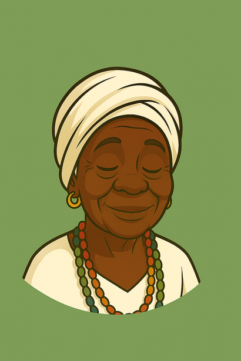
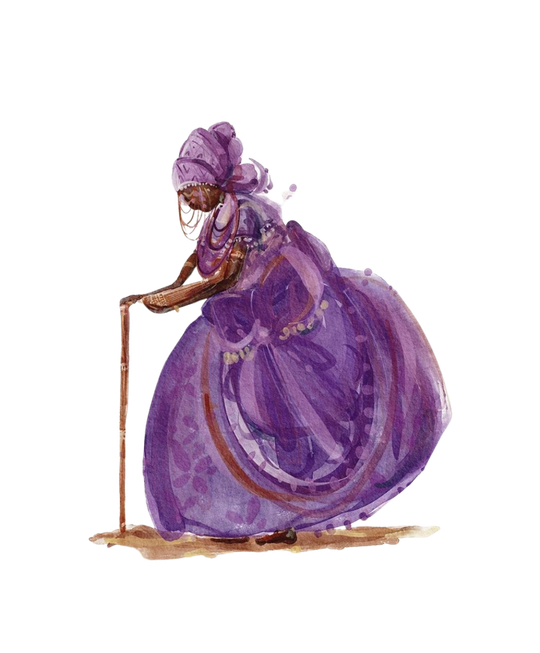

Projeto de Iniciação Científica
Documento que apresenta os objetivos, metodologia e desenvolvimento da pesquisa.
Ler documento →A Nana Buruquê é uma iniciativa de pesquisa e extensão da PUC-Campinas que dá corpo à Chatbot Nanã, uma inteligência artificial educativa sobre religiões de matriz africana. Nascida como projeto de Iniciação Científica do Grupo de Pesquisa Solaris, a proposta une tecnologia e ancestralidade para combater o racismo religioso e resgatar a memória afro-brasileira, com atenção especial à história de Campinas.
A Nana Buruquê nasceu dentro do Grupo de Pesquisa Solaris, da PUC-Campinas, a partir de um projeto de Iniciação Científica orientado pelo Prof. Tarcísio Torres Silva. A motivação é direta: o racismo religioso contra terreiros de Candomblé, Umbanda e outras tradições de matriz africana segue presente no Brasil, e faltam ferramentas digitais que tratem o tema com profundidade — especialmente com recorte local. A chatbot Nanã existe para servir estudantes, educadores, comunidades de terreiro e qualquer pessoa interessada em aprender sobre essas religiões com respeito e rigor histórico, tendo Campinas como território de referência.
Metodologicamente, o projeto parte de revisão bibliográfica e consultoria de especialistas — como o Centro de Estudos Africanos e Afro-Brasileiros da PUC-Campinas — para alimentar um banco de dados que une o racismo estrutural (base teórica), a diáspora africana (origem das tradições) e a história local de Campinas (seu período escravocrata e os patrimônios afro-campineiros ainda pouco conhecidos). [Placeholder — texto pode ser aprofundado assim que os arquivos do repositório de curadoria estiverem acessíveis para consulta.]
[Placeholder — texto de apresentação da experiência conversacional: o que Nanã é capaz de fazer, com qual propósito educativo e social, e como os usuários podem tirar melhor proveito da interação.]

Esta seção reúne os dois projetos de Iniciação Científica que sustentam a Nana Buruquê: "Inteligência artificial para a promoção de diversidade racial e combate à intolerância religiosa na cidade de Campinas" (iniciado em janeiro de 2025) e sua continuidade, "Chatbots como ferramentas de letramento racial" (com início em setembro de 2026), conduzidos por Aline dos Santos Alves de Assis sob orientação do Prof. Tarcísio Torres Silva, no Grupo de Pesquisa Solaris (PUC-Campinas).
O projeto parte do entendimento do racismo religioso como desdobramento do racismo estrutural (Tarcízio Silva, 2021; 2022) e do debate sobre colonialismo digital — o "novo colonialismo dataficado" descrito por Sérgio Silveira (2021) e a atualização de antigas formas de dominação por meio de dados, conforme Faustino e Lippold (2023).
A base sobre religiões de matriz africana apoia-se em Reginaldo Prandi (2000; 2001) e, para a Jurema Sagrada, em L'Odò (2017). Some-se a literatura sobre IA para o bem social e vieses algorítmicos (Chui et al., 2018; Cachat-Rosset & Klarsfeld, 2023; Roshanaei, 2024; Sichman, 2021), que reforça a premissa central: tecnologias não são neutras.
Etapa 1 — revisão bibliográfica sobre religiões de matriz africana e sobre a história afro-campineira; construção de um banco de dados em duas camadas (religiões → memória e história local); consultoria do Centro de Estudos Africanos e Afro-Brasileiros e parceria com a Faculdade de Sistemas da Informação (PUC-Campinas). Protótipo conceitual original: front-end em ReactJS, motor conversacional em LLaMA 3 (via Groq API), banco vetorial Milvus, arquitetura RAG.
Etapa 2 — testes práticos comparando esse protótipo ao Gemini Gems; diante de limitações institucionais para hospedagem em nuvem própria, a pesquisa passou por uma reformulação técnica.
Etapa 3 (nova) — um imprevisto no desenvolvimento levou a equipe a não seguir com o código original do protótipo. A ferramenta em funcionamento hoje foi reconstruída com apoio do Claude (Anthropic), com o código hospedado e indexado no GitHub — de onde também é servido o protótipo desta página — usando Supabase como banco de dados/backend e Vercel para hospedagem e deploy contínuo da aplicação.
O banco de dados é organizado por tradição religiosa — Candomblé (nações Ketu, Jeje, Angola, Congo, Ijexá e Efã), Umbanda, Quimbanda, Jurema Sagrada/Catimbó e Vodu Haitiano — documentando cosmovisão, terminologias, práticas rituais e presença regional de cada uma.
Para o recorte campineiro, a curadoria se apoia no levantamento "Territórios Negros: nossos passos vêm de longe!" (CALIXTO, 2024), mapeando marcos como a Igreja e o Largo São Benedito, o Cemitério da Saudade, a Igreja do Rosário e o Cemitério dos Homens Pretos, a ARMAC, casas de cultura e escolas de samba locais — validados com consultoria da comendadora Edna Almeida Lourenço e da coordenadora Waleska Miguel Batista.
O material de campo também inclui a HQ Territórios Negros (2ª edição), publicação em quadrinhos organizada por Guida Calixto, disponibilizada no acervo digital Baobáxia — repositório comunitário livre mantido pela Casa de Cultura Tainã, pensado para socializar saberes e memórias ancestrais entre comunidades quilombolas, indígenas e urbanas. Acessar a HQ.
[Placeholder — o repositório multimídia de curadoria no Google Drive já está acessível sem exigir login, mas a listagem de arquivos é gerada por JavaScript e não pode ser lida automaticamente. Para citar os materiais individualmente aqui, compartilhe os links diretos de cada PDF/imagem/áudio, ou os nomes das pastas e arquivos.]
Ancorada na crítica ao racismo algorítmico (Silva, 2022) e ao colonialismo digital (Silveira, 2021; Faustino & Lippold, 2023), a avaliação parte do princípio de que nenhuma IA tem consciência neutra — os vieses de quem a constrói se refletem em suas respostas.
As respostas do chatbot são checadas por comparação com as fontes validadas na revisão bibliográfica e em entrevistas, com testes voltados à detecção de alucinações. Motores diferentes (protótipo próprio em RAG e Gemini Gems) são comparados quanto a controle, personalização e mitigação de vieses racistas, com validação prevista em escolas, centros culturais e, experimentalmente, junto a comunidades de religiões de matriz africana.
[Placeholder — instância ou comitê de ética institucional responsável pela aprovação formal da pesquisa, quando aplicável.]
Revisão bibliográfica sobre religiões de matriz africana e sobre Campinas; construção do banco de dados; desenvolvimento do protótipo front-end (ReactJS) e do motor conversacional (LLaMA 3 + Milvus + RAG).
Testes de alucinação e comparação entre o protótipo próprio e o Gemini Gems; adaptação metodológica para ferramentas de automação diante de limitações de hospedagem própria em nuvem.
Diante de um imprevisto com o código original, a ferramenta foi reconstruída com apoio do Claude, hospedada e indexada no GitHub, com Supabase como backend e deploy contínuo via Vercel; aplicação experimental em escolas, centros culturais e comunidades de terreiro; redação do relatório final e artigo para publicação.
Este projeto é um braço da pesquisa mais ampla do Prof. Tarcísio Torres Silva sobre inteligência artificial e diversidade. Para conhecer o projeto completo, acesse tartorres.wixsite.com/iaparaobem.

Professor pesquisador em dedicação integral na PUC-Campinas. Líder do grupo de pesquisa Sociedade Mediatizada: processos, tecnologia e linguagem. Doutor em Artes Visuais pela Unicamp (2013), com estágio doutoral no Goldsmiths College (Universidade de Londres) e pós-doutorado no Labô/PUC-SP (2023–2024). Coordenou o Programa de Pós-Graduação em Linguagens, Mídia e Arte da PUC-Campinas (2018–2022) e foi professor visitante do Instituto Politécnico de Bragança, Portugal (2022). Autor de "Ativismo digital e imagem: estratégias de engajamento e mobilização em rede" (auxílio FAPESP) e coorganizador da coleção "Redes Digitais e Culturas Ativistas" (2022). Coordena o Grupo de Estudos Raça, Cultura e Decolonalidade na PUC-Campinas (2024–atual) e participa, em 2025, da Cátedra Oscar Sala (IEA-USP) sobre agentes de inteligência artificial. Suas pesquisas atuais giram em torno das relações de poder em mídias digitais, com foco em diversidade, equidade e inclusão, implicações sociais da IA e mídia e relações raciais.
Bacharel em Ciências Sociais e graduanda em Jornalismo pela PUC-Campinas. Atua como pesquisadora de Iniciação Científica (Bolsista Reitoria) no Grupo de Pesquisa Solaris, onde desenvolve este projeto interdisciplinar sobre inteligência artificial, diversidade racial e combate à intolerância religiosa. Possui trajetória acadêmica voltada às Ciências da Religião e à Antropologia, com ênfase em religiões afro-brasileiras, cultura popular e processos migratórios.
O projeto conta com a consultoria do Centro de Estudos Africanos e Afro-Brasileiros da PUC-Campinas, por meio da comendadora Edna Almeida Lourenço e da coordenadora Waleska Miguel Batista, além do apoio técnico do professor pesquisador Saullo Oliveira e do curso de Sistemas da Informação da universidade no desenvolvimento do protótipo conversacional.
A identidade visual e o design da interface — incluindo a persona "Nanã Dara" — foram desenvolvidos por uma equipe de alunos da Faculdade de Publicidade e Propaganda: Giulia Sallum, Mariana Oliveira, Ana Paula Lopes, Elizeu Christian Magalhães, Gabriela Antonio D'Alessio e Victor Henrique de Almeida.
A Nana Buruquê é resultado de uma pesquisa desenvolvida na PUC-Campinas. Aqui estão reunidos os projetos, resumos expandidos, apresentações e demais materiais que documentam a trajetória acadêmica da iniciativa.
Documento que apresenta os objetivos, metodologia e desenvolvimento da pesquisa.
Ler documento →Resumo apresentado durante o evento científico.
Ler resumo →Apresentação da Nana Buruquê e do Chatbot Nanã.
Ver certificado →[Placeholder — envie os nomes reais dos congressos/eventos e os PDFs correspondentes (projeto, resumo expandido, certificado) para substituir os textos acima; os arquivos devem ser enviados para uma pasta "docs" no repositório para que os links funcionem.]
Compreender o racismo religioso exige olhar para três camadas que se sobrepõem: a estrutura social que sustenta o racismo no Brasil, a história da diáspora africana que formou as religiões de matriz africana, e a memória local de Campinas — cidade cuja riqueza foi construída sobre a mão de obra escravizada e cujo apagamento cultural o projeto busca reverter.
O racismo não precisa ser confessado para se reproduzir — no Brasil, ele é, antes de tudo, negado.
Não existe uma única raiz africana no Brasil, mas uma trama de origens que a mestiçagem oficial tentou, por muito tempo, simplificar ou apagar.
A opulência da Campinas cafeeira do século XIX teve como contrapartida direta o cativeiro urbano e rural de milhares de pessoas negras.